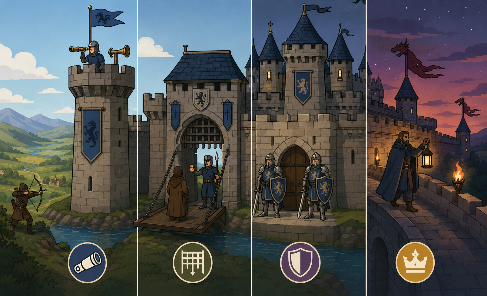
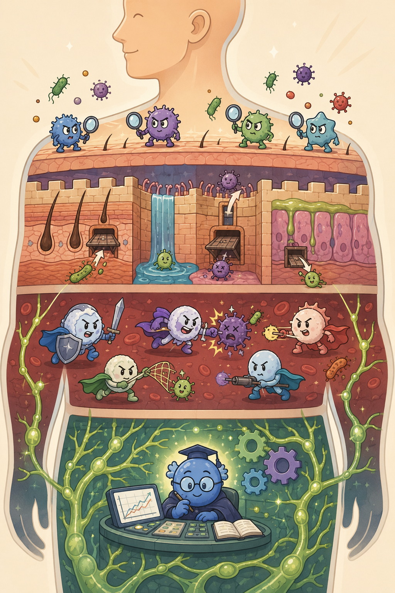
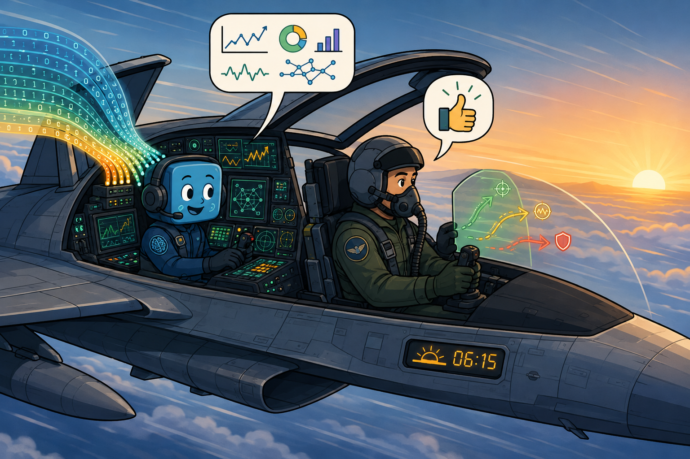
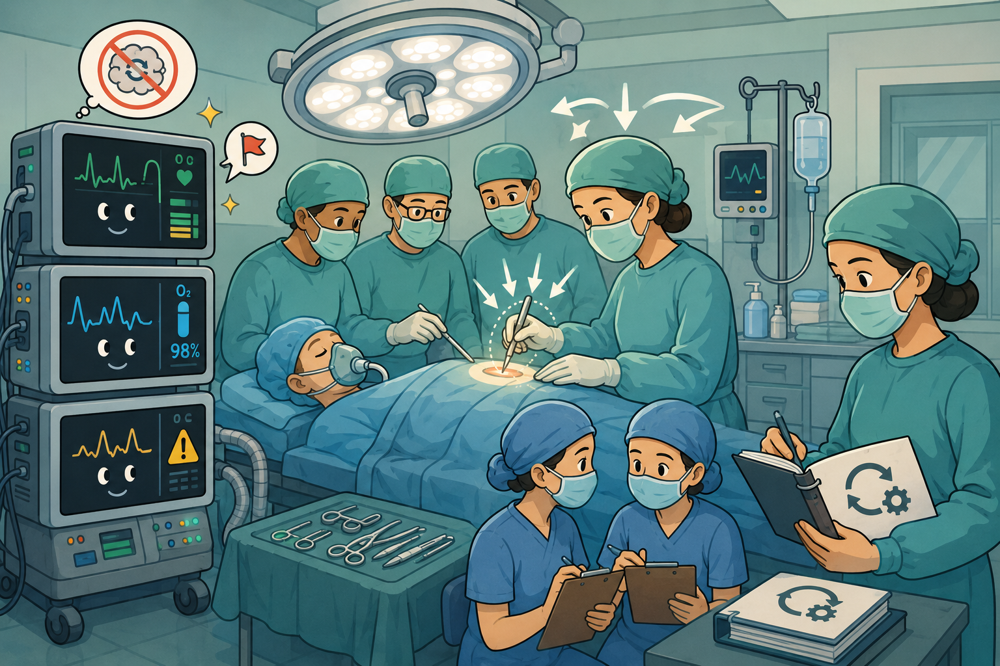

The Zscaler AI Security Framework, how it applies in practice, and a real-time incident walkthrough showing AI and human judgment working together.
Knowing the risks is not enough.
This lesson turns awareness into a structured, actionable security posture — and shows what it looks like when AI-powered defence actually works.
💭THINK FIRST · THE FRAMEWORK
Before you study the Zscaler AI Security Framework, ask yourself what makes a defensive posture sustainable. A framework is not a checklist — it is an ordering of priorities. The order itself carries meaning: you cannot defend what you do not see, and you cannot govern what you cannot define.
Why does the framework insist on visibility (See) before control (Control) and protection (Protect)? What breaks if you reverse the order?
If Governance is "continuous" rather than a discrete step, what is the tradeoff for an organisation that treats it as an annual audit instead?
Imagine a company has world-class access controls but no AI asset inventory. Which gap in the framework would you expect attackers to exploit first?
Q1 — MODEL ANSWER
Visibility is the precondition for everything else. If you cannot see an AI tool, you cannot apply controls to it (which user is using it, with what data) and you cannot protect the data flowing through it. Reverse the order and you end up applying brittle controls to a subset of known tools while Shadow AI quietly handles the sensitive workloads — the controls feel rigorous, but they are policing the wrong perimeter.
Q2 — MODEL ANSWER
Governance is continuous because the AI landscape is continuous — new tools arrive weekly, employee behaviour drifts, regulations change. An annual audit captures a single snapshot, so policy and reality diverge for 364 days a year. The tradeoff is silent decay: visibility goes stale, controls drift out of alignment with current usage, and gaps reopen invisibly. The framework collapses into theatre.
Q3 — MODEL ANSWER
Shadow AI first. Strong access controls only protect the tools you have actually enrolled — they are blind to anything not in the inventory. Attackers (and well-meaning employees) gravitate toward the path of least resistance: the unsanctioned ChatGPT tab, the personal Claude subscription, the browser extension nobody approved. Without an asset inventory, the access controls are a fence around an empty field.
THE ZSCALER AI SECURITY FRAMEWORK
See, Control, Protect — and Govern continuously
Zscaler addresses the AI security challenge with a framework built around three pillars: AI Asset Management, Secure Access to AI, and Secure AI Infrastructure and Apps. Governance and Compliance runs continuously across all three — it is not a separate step but the layer that keeps everything working over time.
The core insight: Controls are not a one-time fix. This framework ensures a response becomes a sustainable posture. No single element closes the gap on its own. A complete AI security posture requires visibility, access control, and infrastructure protection — held together by continuous governance.
→
WHY IT MATTERS
You cannot protect what you cannot see. You cannot control what you cannot govern. You cannot govern what you have not made visible. The framework addresses these in order — See first, then Control, then Protect — with Governance as the thread that runs through all three.
Analogy
A medieval castle did not protect itself with one tall wall. It used moats, gatehouses, inner baileys, and a constant watch — each layer compensating for the one before it. The Zscaler framework is the same idea: See is the watchtower, Control is the gatehouse, Protect is the keep, and Governance is the captain who walks the walls every night so no torch goes unlit.

📷 A1.png — add this image to the folder
Flat minimalist cartoon illustration of a medieval castle in wide cross-section as an analogy for layered defence. Four labelled-by-imagery defensive layers visible left-to-right. Layer 1 (See): a tall stone watchtower at the outer edge with a vigilant sentry holding a telescope and a signal horn, banners flying, a wide view of the surrounding countryside. Layer 2 (Control): a fortified gatehouse with a drawbridge over a moat, portcullis halfway down, a stern guard inspecting visitors, allow-and-deny gesture. Layer 3 (Protect): a strong central keep with thick stone walls, brave knights in shining armour ready with shields and swords at the doorway. Layer 4 (Governance): a captain of the watch in a long cloak walking the battlements at twilight carrying a lantern, lighting torches along the wall, a calm reassuring presence. Stars beginning to appear in the sky, dragon-shaped pennants. A small enemy archer figure outside the moat illustrates that no single layer is the only defence. Clean geometric shapes, flat illustration style, bold outlines, simple cartoon characters, no text labels, no UI elements, educational infographic feel, modern tech-analogy aesthetic.
📷 1.png will appear here once you add it to this folder
Generate: flat green minimalist illustration of three concentric defensive rings around a central node, with a continuous thin band weaving through all three layers, palette of emerald and forest green with cream accents, geometric and clean, no text labels
🧠
MENTAL NOTE
The framework is ordered for a reason — See, Control, Protect, with Governance woven through all three. No single pillar closes the gap alone; remove Governance and the others decay over time.
ASK A QUESTION
MY NOTES
💭THINK FIRST · THE THREE PILLARS
Each pillar exists to close a specific gap that legacy security tools leave open. Asset management catches Shadow AI. Access control catches data leaking through clipboards and unmanaged identities. Infrastructure protection catches vulnerabilities baked into custom AI builds. Try to name the gap before you name the pillar.
If your team blocked all public AI tools tomorrow, would that solve Shadow AI — or would it push the risk somewhere harder to see?
Where does the line sit between "Secure Access to AI" and "Secure AI Infrastructure"? What happens at the boundary when an employee uses a company-built chatbot?
Imagine an organisation that builds its own AI but never inventories third-party models. Which pillar is failing — and why does the failure compound?
Q1 — MODEL ANSWER
Blanket blocking does not eliminate the demand for AI — it just relocates it. Employees who need to ship work will move to personal devices, mobile hotspots, or browser-based wrappers that the corporate proxy cannot see. So you trade visible Shadow AI for invisible Shadow AI, which is strictly worse: same data leakage, zero telemetry, no chance of detection. The right answer is sanctioned alternatives plus visibility, not prohibition.
Q2 — MODEL ANSWER
"Secure Access to AI" governs the conduit — who reaches which AI tool, with what data, under what conditions. "Secure AI Infrastructure" governs the AI itself — the model, the training pipeline, the inference endpoint. A company-built chatbot lives on both sides of the line: an employee accessing it is an Access concern (auth, DLP on the prompt), while the chatbot itself is an Infrastructure concern (prompt injection defences, model supply chain). The handoff is the boundary where most real-world incidents land.
Q3 — MODEL ANSWER
Pillar 1 (AI Asset Management) is failing, and the failure compounds because every downstream control depends on it. You cannot apply access policies to third-party models you have not enrolled, you cannot patch infrastructure you do not know is running, and you cannot govern what is invisible. The custom AI gets enormous scrutiny while the unmanaged third-party model siphons the same data — same risk, none of the defence.
THREE PILLARS + GOVERNANCE
What each pillar does and the gap it closes
PILLAR 1 · SEE
AI Asset Management
Know your full AI footprint. You cannot protect what you cannot see. This means discovering every AI tool in use — sanctioned or not — and understanding the risk each one carries.
Gap it closes: Shadow AI. Employees use unsanctioned tools without IT knowledge. Asset management makes the invisible visible.
PILLAR 2 · CONTROL
Secure Access to AI
Ensure safe and responsible AI use. Once you can see the tools, you can control how they are used. Block sensitive data from entering public AI tools. Prevent unsafe and malicious activity at the point of entry.
Gap it closes: The Clipboard, Identity, and Encryption gaps. Controls at the access layer catch what legacy tools miss.
PILLAR 3 · PROTECT
Secure AI Infrastructure & Apps
Protect AI across its full lifecycle. If an organisation builds its own AI, it needs protection from development through deployment and into runtime. Custom AI tools introduce vulnerabilities at every stage.
Gap it closes: Internal AI risk. Vulnerabilities introduced during development that persist into production.
CONTINUOUS LAYER · ACROSS ALL THREE PILLARS
Governance & Compliance
Sustain posture over time. Governance is not a project or a one-time audit — it is continuous monitoring, posture management, and policy enforcement as requirements evolve. Without it, visibility decays, controls drift, and protection gaps reopen. Governance is the layer that holds the framework together.
Analogy
Think of the human immune system. Innate immunity scans for anything unfamiliar (See). Skin and mucous membranes filter what comes in (Control). White blood cells engage what gets past the barrier (Protect). And the lymphatic system runs continuously in the background, remembering, adapting, sustaining (Govern). Remove any layer and the body still functions briefly — until a single infection cascades.

📷 A2.png — add this image to the folder
Flat minimalist cartoon illustration of the human immune system as an analogy for layered cybersecurity defence. Four anatomically friendly cartoon scenes inside a transparent human body silhouette standing tall. Scene 1 (See / Innate Immunity): tiny anthropomorphic sentinel cells at the surface of the skin holding little magnifying glasses, scanning incoming pathogens for anything unfamiliar. Scene 2 (Control / Barriers): a cross-section of skin and mucous membranes drawn like a fortress wall with tiny soft hairs and trapdoors, friendly-looking microbes being filtered out or let through. Scene 3 (Protect / White Blood Cells): heroic white blood cell characters with capes engaging cartoon viruses and bacteria in playful combat. Scene 4 (Govern / Lymphatic System): a glowing branching network of vessels with a smart-looking memory-cell character at a control desk reviewing a chart, with little adaptation gears spinning continuously in the background. Soft pastel anatomical colours, warm friendly tone, mood of coordinated whole-body teamwork. Clean geometric shapes, flat illustration style, bold outlines, simple cartoon characters, no text labels, no UI elements, educational infographic feel, modern tech-analogy aesthetic.
📷 2.png will appear here once you add it to this folder
Generate: flat green minimalist illustration of three vertical pillars supporting a horizontal beam, with a continuous green thread weaving through and around all three pillars, palette of forest green, sage, and cream, geometric and architectural, no text labels
🧠
MENTAL NOTE
Each pillar closes a specific gap: Asset Management = Shadow AI; Secure Access = Clipboard/Identity/Encryption gaps; Secure Infrastructure = internal-build vulnerabilities. Governance is continuous — never a finished project.
ASK A QUESTION
MY NOTES
💭THINK FIRST · THE INCIDENT WALKTHROUGH
Seven decisions, one morning, one breach stopped. Before you read the timeline, think about where AI adds the most leverage and where human judgment is irreplaceable. The interesting answers are not at the extremes — they are at the handoffs between automation and authorisation.
At which step does AI's contribution shift from detection to prediction? Why does that shift change the team's posture from reactive to anticipatory?
If the analyst had not been available to authorise containment, should AI have acted alone? What does the answer reveal about the human-AI partnership?
Compare the 5-minute AI-assisted containment with a 60-minute manual response. What attacks become impossible at minute-scale speed that were unstoppable at hour-scale?
Q1 — MODEL ANSWER
The shift happens at Step 3, Correlation. Up to that point AI is describing what already occurred (a strange login, abnormal downloads). At correlation, AI matches the TTPs to a known campaign and projects the likely next moves — lateral movement attempts in this case. The team is no longer chasing what happened; they are pre-positioning for what is about to happen, and that converts the SOC from reactive to anticipatory.
Q2 — MODEL ANSWER
No — and the framework is deliberately built so that AI does not. Autonomous AI containment cannot weigh business context: shutting down the CFO's account ten minutes before an earnings call is technically correct and operationally catastrophic. Human authorisation exists precisely so judgement calls about consequence stay with someone accountable. The answer reveals that "human-AI partnership" is not a slogan; it is a deliberate division of labour between speed (AI) and consequence (human).
Q3 — MODEL ANSWER
At hour-scale, automated post-compromise toolkits can finish their work and exfiltrate before containment lands — credential harvesting, lateral movement, and data theft all complete in well under 60 minutes. At minute-scale, the attacker is interrupted mid-sequence: the dropper has fired but the C2 callback is blocked, the privilege escalation is in flight but the account is already disabled. Speed converts a successful breach into a contained intrusion attempt.
INCIDENT WALKTHROUGH
One morning. One financial institution. Seven decisions that stopped a breach.
Follow a security team as AI and human judgment work together in real time — from the first anomaly alert at 8:15 AM through to incident close at 10:00 AM.
8:15 AM
1
Detection
WHAT HAPPENED
Login flagged on a finance executive's account: unknown device, unusual location, 3:14 AM local time.
Without AI, this signal would be invisible.
WHAT AI DID
Baseline learning: AI knows the account's normal pattern — location, device, login window.
Three deviations detected simultaneously.
Composite risk score: 85/100. Alert escalated to SOC analyst.
AI detects unexpected deviations, not just known signatures. That is what makes it effective at scale.
8:20 AM
2
Investigation
WHAT HAPPENED
SOC analyst uses UEBA to examine what the account has done since the suspicious login.
HR database accessed for the first time. 500MB downloaded — normal is under 20MB.
Privilege escalation attempt: tried to access Domain Controller.
WHAT AI DID
Peer comparison: account downloading 25x more data than similar accounts today.
Lateral movement score: 92/100. Pattern matches automated tools, not human browsing.
Likely coordinated campaign — Peak Period Harvest. Lateral movement attempts expected next.
Without correlation, the team reacts to one alert. With it, they anticipate what comes next.
8:30 AM
4
Response
WHAT HAPPENED
Threat confirmed. AI generates a prioritised list of containment actions.
Analyst reviews and approves each action before execution.
WHAT AI DID
AI-assisted containment: ~5 minutes.
Manual response for the same actions: ~60 minutes.
AI provides speed. Humans provide authorisation. Control stays with the analyst.
The human-AI partnership works because neither acts alone. AI recommends. Humans decide.
8:45 AM
5
Containment
WHAT HAPPENED
With the device isolated, the attacker attempts to pivot to the payment server.
The attempt is blocked before it reaches its target.
WHAT AI DID
Least Privilege: the compromised account has no valid reason to access payment infrastructure.
Micro-segmentation: critical systems sit in isolated zones — no default lateral path exists.
Dynamic policy: AI revoked access automatically when risk score crossed the threshold.
Zero Trust + AI enforcement limits blast radius. The attacker cannot move because there is no path available.
9:00 AM
6
Analysis
WHAT HAPPENED
A suspicious script discovered on the compromised device.
Analyst uploads it to an AI sandbox. Manual analysis would take hours.
WHAT AI DID
Deobfuscated and analysed in seconds.
Identified as a dropper designed to download a secondary payload and establish remote access.
IOCs extracted automatically, including the C2 server.
AI sandbox analysis turns hours of manual work into seconds — with actionable indicators delivered immediately.
9:30 AM
7
Hunting
WHAT HAPPENED
Device contained. Are any other devices infected?
Analyst asks in plain English: show all devices that connected to the identified IP in the last 24 hours.
WHAT AI DID
Natural language query translated automatically into complex SIEM syntax.
Results returned in seconds: one additional workstation flagged suspicious.
Proactive cleanup initiated. Spread stopped before it escalates.
Before AI, this required 20+ minutes of complex query writing. With AI, any analyst can hunt threats in plain language.
→
THE RESULT — MINUTES, NOT DAYS
The threat was neutralised in minutes, not days — because AI handled the speed and scale while humans provided the judgment and authorisation. Neither could have done it alone.
Analogy
Picture a fighter pilot and the aircraft's flight computer. The computer sees a thousand telemetry signals per second, predicts stall conditions, and offers corrections. But the pilot decides whether to engage, evade, or hold. Strip away the computer and the pilot is overwhelmed; strip away the pilot and the aircraft has no purpose. The SOC analyst and the AI work the same way — and at 8:15 AM with seconds to act, both seats are occupied.

📷 A3.png — add this image to the folder
Flat minimalist cartoon illustration of a fighter-jet cockpit cutaway as an analogy for human-AI co-piloting in the SOC. Centre: a sleek jet with the canopy open showing two seats occupied. Front seat: a focused human pilot in flight helmet and oxygen mask, gloved hands on the stick, eyes calmly scanning the horizon at sunrise, decision-arrows pointing forward (engage / evade / hold). Back seat / dashboard: a friendly anthropomorphic flight computer character with multiple screens, dozens of telemetry dials, line graphs, predictive stall-warning indicators, a thousand glowing data streams represented as flowing ribbons of numbers entering its sensors. The computer is whispering suggestions in a speech bubble containing little chart icons; the pilot's speech bubble contains a thumbs-up decision icon. A small digital clock on the dashboard shows an early-morning time (visualised as a sun barely above the horizon). Clouds streaking past, sunrise gradient. Both seats clearly indispensable. Clean geometric shapes, flat illustration style, bold outlines, simple cartoon characters, no text labels, no UI elements, educational infographic feel, modern tech-analogy aesthetic.
📷 3.png will appear here once you add it to this folder
Generate: flat green minimalist illustration of a horizontal timeline with seven nodes connected by a flowing line, each node a different small abstract icon, palette of emerald green with cream and charcoal accents, clean and editorial, no text labels
🧠
MENTAL NOTE
Memorise the seven steps in order: Detection, Investigation, Correlation, Response, Containment, Analysis, Hunting. AI provides speed and scale at every step; humans provide context and authorisation. Containment worked because Zero Trust meant there was no path to pivot.
ASK A QUESTION
MY NOTES
💭THINK FIRST · THE DEBRIEF
The debrief is not just a summary — it is a separation of responsibilities. AI did four things; humans did four things. Notice that none of the columns can swap. Speed cannot be delegated to a human; judgment cannot be delegated to AI. Read each side and ask what would have happened if the work had been forced onto the wrong actor.
"Provided context — knew the executive was not travelling to Europe." Why could AI not have known this on its own? What does that tell you about the limits of behavioural baselines?
If AI both detects and acts, the response is fast but brittle. What specific failure modes are prevented by inserting a human authorisation step before containment?
"Improved posture — updated policies based on what the incident revealed." Is this a human-only task forever, or will AI eventually contribute? What would have to be true for that handoff to be safe?
Q1 — MODEL ANSWER
Behavioural baselines describe what is statistically normal, not what is contextually true. The travel calendar, the executive's verbal mention of cancelled plans, the assistant rescheduling Tokyo meetings — none of it flows into the SIEM. Humans hold this context implicitly. The lesson: AI is excellent at "different from usual" but blind to "different from intended," and intent lives in human conversation, not logs.
Q2 — MODEL ANSWER
Without a human gate, three failure modes appear quickly: false positives become outages (a legitimate executive login flagged at 3 AM kills the deal), adversarial inputs become weapons (an attacker who can fool the model can also trigger self-inflicted containment), and accountability evaporates (who answers when automation disables the wrong account?). The authorisation step inserts a moment of consequence-weighing that AI cannot perform.
Q3 — MODEL ANSWER
AI will increasingly contribute — drafting policy updates, proposing rule changes from incident patterns, identifying gaps. The handoff becomes safe when three things are true: changes are proposals not unilateral actions, every recommendation traces back to evidence a human can audit, and posture changes go through the same change-management review as any other production change. AI accelerates the analysis; humans still own the policy.
10:00 AM — DEBRIEF
What AI did. What humans did. Why both were essential.
What AI Did
Processed at scale. Analysed millions of log events in seconds.
Found the pattern. Detected the anomaly in a sea of normal activity.
Correlated the threat. Linked the incident to a known campaign in real time.
Acted at speed. Executed approved containment actions immediately.
What Humans Did
Provided context. Knew the executive was not travelling to Europe.
Made decisions. Reviewed and authorised every containment action.
Managed impact. Ensured business operations continued without disruption.
Improved posture. Updated policies based on what the incident revealed.
Analogy
A surgical team is the cleanest analogy. The monitoring equipment tracks every vital sign at machine speed, flags anomalies before a human could feel them, and recommends interventions. But the surgeon decides where to cut. After the operation, the nurses debrief, the surgeon updates the protocol, and the equipment learns nothing on its own. Speed and scale belong to the machines; consequence and context belong to the humans.

📷 A4.png — add this image to the folder
Flat minimalist cartoon illustration of an operating theatre as an analogy for the human-machine division of labour. Central scene: a calm surgical team gathered around a draped patient on an operating table under a bright overhead lamp. To one side: tall monitoring machines drawn with friendly digital faces, beeping rhythmically, displaying ECG waveforms and oxygen saturation bars, with little spark icons and warning flag icons signalling anomalies the instant they appear. To the other side: the lead surgeon in cap, mask and gown holding a scalpel with steady, thoughtful concentration, eyes intent on the patient, a halo of decision arrows above her head pointing to a precise spot to cut. In the foreground: two nurses afterward holding clipboards in a small debrief huddle, while the surgeon updates a binder labelled with a protocol-update icon. The machines stand quietly in the corner — unable to learn on their own (shown by a small "no update" icon over them). Mood of disciplined teamwork, sterile pale-green and soft-blue surgical palette. Clean geometric shapes, flat illustration style, bold outlines, simple cartoon characters, no text labels, no UI elements, educational infographic feel, modern tech-analogy aesthetic.
🧠
MENTAL NOTE
AI = processed, found, correlated, acted (speed + scale). Humans = context, decision, impact, posture (judgment + authority). The partnership only works because the columns do not overlap.
ASK A QUESTION
MY NOTES
💭THINK FIRST · FROM REACTIVE TO PROACTIVE
Reactive security waits for a threat to declare itself. Proactive security tries to close the path before the attacker walks it. The shift sounds obvious — until you ask what it costs in false positives, in user friction, and in the trust an organisation places in predictive models.
What is the conceptual difference between "detecting an anomaly" and "predicting the next attacker move"? Where does the second require capabilities the first does not?
Proactive prevention can mean blocking actions that have not yet happened. What is the tradeoff when a predictive model is wrong — and how does the framework's Governance layer manage that risk?
If proactive security is the goal, why does the lesson insist that See, Control, Protect, and Govern remain the foundation? What collapses if you skip straight to prediction?
Q1 — MODEL ANSWER
Anomaly detection asks "is this current behaviour different from baseline?" — a backward-looking statistical question. Prediction asks "given this attacker's apparent goal and the paths available, what is the next likely move?" — a forward-looking modelling question. Prediction requires attacker modelling, threat intelligence correlation, and exposure path analysis. It is a different cognitive task and a different data dependency.
Q2 — MODEL ANSWER
The cost of a wrong prediction is real friction: a legitimate user blocked, a deployment delayed, a workflow interrupted. Without Governance, these false positives accumulate silently until users find workarounds and trust in the model collapses. Governance manages this risk by tracking model accuracy, requiring proportional responses (warn before block), and creating a feedback loop so prediction quality is monitored as a live metric, not a vendor claim.
Q3 — MODEL ANSWER
Prediction is a layer on top, not a replacement for the foundation. Without See, the predictive model has no inventory to reason over. Without Control, accurate predictions cannot be enforced. Without Protect, the prediction engine itself can be poisoned. Without Govern, prediction drifts from reality. Skip the foundation and you build a forecasting engine on sand — confident outputs, no enforcement, no truth-checking, no resilience.
FROM REACTIVE TO PROACTIVE
The next frontier — preventing threats before they strike
Traditional security relies on detecting threats after they enter. In the age of AI speed, seconds matter — and detection after entry is already late. The shift to proactive security asks a different question.
Intelligent Prevention: What if we could use GenAI not just to respond to threats, but to predict and prevent them before they strike? This is the direction AI-powered security is heading — from reactive detection to proactive prevention.
→
WHAT THIS MEANS IN PRACTICE
Proactive security uses AI to model attacker behaviour, predict likely next steps, and close exposure paths before they are exploited. The Zscaler framework — See, Control, Protect, Govern — is the foundation that makes proactive posture possible. Without visibility and continuous governance, prevention cannot be sustained.
Analogy
Reactive security is a goalkeeper diving for the shot already in the air. Proactive security is the defender who reads the striker's run two passes earlier and closes the lane before the shot is taken. The goalkeeper still matters — but the team that wins is the one whose defenders never let the shot happen. Both require the same field of view; proactive defence just acts on it sooner.
📷 A5.png — add this image to the folder
Flat minimalist cartoon illustration of a football (soccer) pitch as an analogy for reactive versus proactive defence. Wide composition viewed from above and from the side. Right side scene (Reactive): a goalkeeper in bright gloves and jersey heroically diving full-stretch through the air toward a ball already screaming past him into the top corner of the net — dramatic motion lines, sweat drops, last-second desperation, mood of "too late". Left side scene (Proactive): a calm, clever defender further up the field, eyes wide and tracking the striker's run, intercepting the pass long before a shot can be attempted, predictive dotted arcs showing future passing lanes drawn across the pitch, the would-be shooter frustrated with hands on hips, the threat snuffed out early, mood of foresight and ease. Same green pitch, same white lines, same teammates visible — emphasising same field of view but earlier action. A scoreboard in the distance shows the proactive team winning. Clean geometric shapes, flat illustration style, bold outlines, simple cartoon characters, no text labels, no UI elements, educational infographic feel, modern tech-analogy aesthetic.
🧠
MENTAL NOTE
Proactive prevention does not replace See-Control-Protect-Govern — it depends on them. GenAI's role shifts from responding to threats to predicting and closing exposure paths before they are exploited.